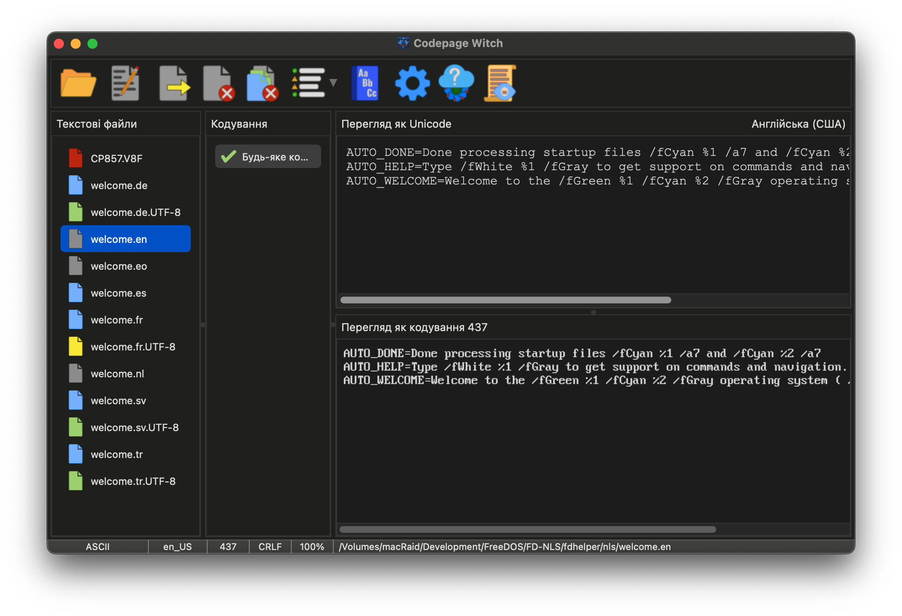

Обличчя Відьми: Головне вікно
Головний інтерфейс розроблений як "Дзеркало" в реальному часі між вашими вихідними файлами та їхнім призначенням. Відьма використовує систему колірних кодів для миттєвого відображення стану ваших файлів.

Заклинання: Панель інструментів
Панель інструментів — ваше головне джерело магії. Тут містяться заклинання для відкриття файлів, експорту та доступу до глибоких налаштувань Відьми.
 |
Відкрити: Перегляньте файлову систему, щоб вибрати файли. Також можна використовувати Drag-and-Drop, щоб кинути файли в казан. |
 |
Редагувати: Перемістіть файл у ваш улюблений зовнішній текстовий редактор для ручних правок. |
 |
Експорт: Запечатайте ваші трансмутації. Це зберігає файл з обраною кодовою сторінкою та типом закінчення рядків. |
 |
Закрити: Вигнати вибраний файл із казана. |
 |
Закрити все: Повністю очистити казан, видаливши всі файли поточної сесії. |
 |
Фільтр: Звузьте список Чарів, щоб показати лише повні збіги, потенційні або всі відомі Відьмі кодові сторінки. |
 |
Словник: Зверніться до Головного та Користувацького словників, щоб допомогти Відьмі розширити її багатомовні знання. |
 |
Опції: Зазирніть у глибинні механізми Відьми. Налаштуйте її вигляд, поведінку та автоматичні правила перевірки. |
 |
Оновлення: Слідкуйте за цифровим горизонтом у пошуках нових версій Codepage Witch. |
 |
Журнал: Відкрийте внутрішню книгу Відьми для перегляду детальних звітів або дослідження помилок. |
Казан файлів: Іконки стану
Колір іконки вказує на результати сканування Відьмою:
| Аналіз: Файл обробляється у фоновому режимі. | |
| Джерело Unicode: Файл UTF-8. Відьма підібрала найкращі кодові сторінки. | |
| Застаріле джерело: Файл у кодуванні Codepage. Відьма використовує статистичний аналіз. | |
| Простий ASCII: 7-бітний текст без спеціальних символів. Безпечний для будь-якої конвертації. | |
| Знамення: Виявлено помилку форматування (наприклад, відсутність останнього порожнього рядка). | |
| Порожнеча: Сталася помилка читання або це бінарний файл. |
Подвійні Дзеркала: Оригінал vs. Трансмутований
- Переглядач Unicode (Верхній): Показує файл як стандартний текст UTF-8.
- Переглядач Codepage (Нижній): Відображає текст за допомогою обраної кодової сторінки.